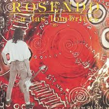

Frase
“Mientras quede un poco de aire, habrá que seguir soplando.”
Rosendo
1987 · Publicado por DRO · Grabado en estudios Trak (Madrid).

Vengo aprendiendo a contramano,
con pies descalzos y decisión;
si me tropiezo me levanto,
que no me falte corazón.
“Mientras quede un poco de aire, habrá que seguir soplando.”